Create mixture model data and resulting density and line plots.
Arguments
- ...
The random data you want to pass. Example rnorm(50,0,1) or something like tidy_normal(.mean = 5, .sd = 1)
Details
This function allows you to make mixture model data. It allows you to produce density data and plots for data that is not strictly of one family or of one single type of distribution with a given set of parameters.
For example this function will allow you to mix say tidy_normal(.mean = 0, .sd = 1) and tidy_normal(.mean = 5, .sd = 1) or you can mix and match distributions.
The output is a list object with three components.
Data
input_data (The random data passed)
dist_tbl (A tibble of the passed random data)
density_tbl (A tibble of the x and y data from
stats::density())
Plots
line_plot - Plots the dist_tbl
dens_plot - Plots the density_tbl
Input Functions
input_fns - A list of the functions and their parameters passed to the function itsefl
Examples
output <- tidy_mixture_density(rnorm(100, 0, 1), tidy_normal(.mean = 5, .sd = 1))
output$data
#> $dist_tbl
#> # A tibble: 150 × 2
#> x y
#> <int> <dbl>
#> 1 1 0.982
#> 2 2 -0.824
#> 3 3 1.05
#> 4 4 -1.86
#> 5 5 -0.998
#> 6 6 -0.271
#> 7 7 2.04
#> 8 8 1.58
#> 9 9 2.29
#> 10 10 -1.02
#> # ℹ 140 more rows
#>
#> $dens_tbl
#> # A tibble: 150 × 2
#> x y
#> <dbl> <dbl>
#> 1 -5.50 0.0000430
#> 2 -5.40 0.0000620
#> 3 -5.30 0.0000886
#> 4 -5.20 0.000125
#> 5 -5.10 0.000174
#> 6 -5.00 0.000240
#> 7 -4.90 0.000327
#> 8 -4.80 0.000441
#> 9 -4.70 0.000588
#> 10 -4.60 0.000776
#> # ℹ 140 more rows
#>
#> $input_data
#> $input_data$`rnorm(100, 0, 1)`
#> [1] 0.9820391479 -0.8239576352 1.0475308279 -1.8645614591 -0.9977041551
#> [6] -0.2706387298 2.0413331084 1.5789677926 2.2859513725 -1.0243229440
#> [11] -2.3156122664 -1.1266936855 2.2376028349 1.3280901577 0.4268179243
#> [16] 0.0889461553 2.3330788336 0.9215105281 1.5124200950 1.8926376579
#> [21] 0.5301604501 0.0388082397 0.0757575053 -0.3759246219 0.9454757936
#> [26] 0.3955006637 -1.0404094142 0.1875609964 -0.9878319616 0.8322358498
#> [31] -1.8539194993 0.0166041422 1.2198213332 -0.9998473036 -1.1194653672
#> [36] -0.6512642809 -0.0782414755 1.1223546134 0.0432149355 -1.0055660097
#> [41] -1.0605427505 -0.9780826684 0.2156553964 -1.0244356081 -0.1672343183
#> [46] -0.3524747615 -0.7678442063 0.8929249266 -1.8054944016 -0.8037089717
#> [51] 1.5888981046 -1.6792777564 -0.4552552616 -0.4519479248 -1.2026589161
#> [56] -0.5996760262 -0.7700044780 -0.6888678346 -1.2176310721 0.2763415258
#> [61] -0.6986100304 -0.3463613442 -2.2181876315 0.3007715453 0.5126655658
#> [66] 1.1490706101 0.0198440598 0.7955316734 -0.3717398058 -1.2642399758
#> [71] -0.0007623398 0.8757133434 -2.2503508713 -1.8760836031 0.2450650974
#> [76] 0.1504616262 -0.8681737275 1.0739293688 -0.5724911434 0.3083978764
#> [81] 1.4352761491 0.0167385262 -2.9707585917 0.9884121022 -0.6027094452
#> [86] 1.3518884643 1.2888252666 0.0464637487 0.5516622288 1.6542361358
#> [91] -1.5747105032 0.4175795989 2.1937665535 1.1426655737 -0.3725001491
#> [96] 0.3715174512 0.3944533646 -0.9761673059 0.4503986009 0.1305429532
#>
#> $input_data$`tidy_normal(.mean = 5, .sd = 1)`
#> # A tibble: 50 × 7
#> sim_number x y dx dy p q
#> <fct> <int> <dbl> <dbl> <dbl> <dbl> <dbl>
#> 1 1 1 4.74 1.31 0.000228 0.396 4.74
#> 2 1 2 3.78 1.44 0.000603 0.112 3.78
#> 3 1 3 5.40 1.58 0.00143 0.656 5.40
#> 4 1 4 6.22 1.72 0.00307 0.888 6.22
#> 5 1 5 5.06 1.86 0.00599 0.523 5.06
#> 6 1 6 4.48 1.99 0.0107 0.303 4.48
#> 7 1 7 5.45 2.13 0.0176 0.673 5.45
#> 8 1 8 4.22 2.27 0.0270 0.217 4.22
#> 9 1 9 4.52 2.41 0.0392 0.315 4.52
#> 10 1 10 6.26 2.54 0.0539 0.897 6.26
#> # ℹ 40 more rows
#>
#>
output$plots
#> $line_plot
 #>
#> $dens_plot

#>
output$input_fns
#> [[1]]
#> rnorm(100, 0, 1)
#>
#> [[2]]
#> tidy_normal(.mean = 5, .sd = 1)
#>
#>
#> $dens_plot

#>
output$input_fns
#> [[1]]
#> rnorm(100, 0, 1)
#>
#> [[2]]
#> tidy_normal(.mean = 5, .sd = 1)
#>